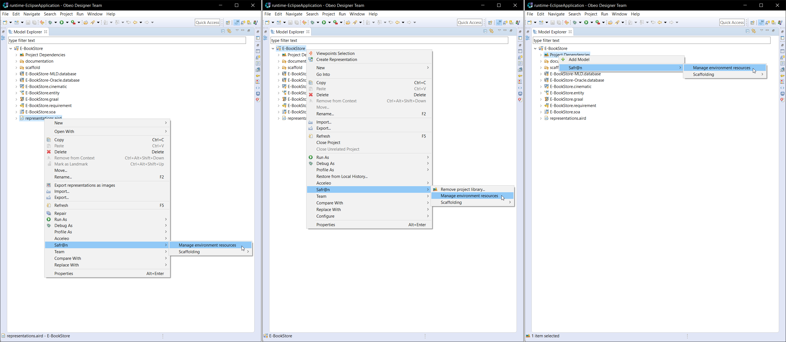
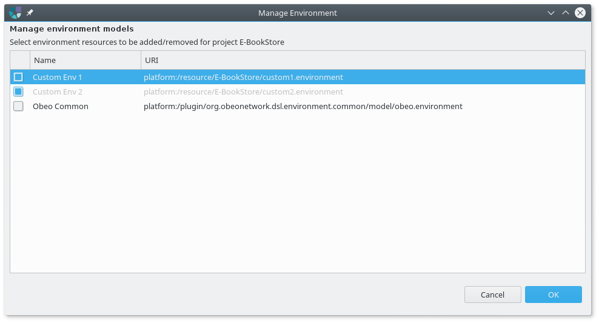
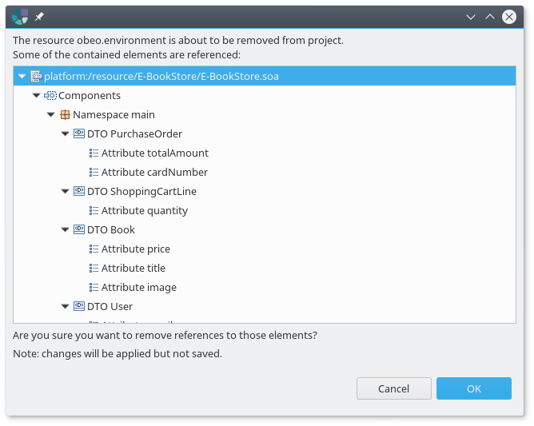
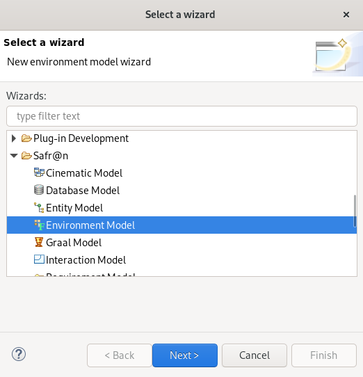
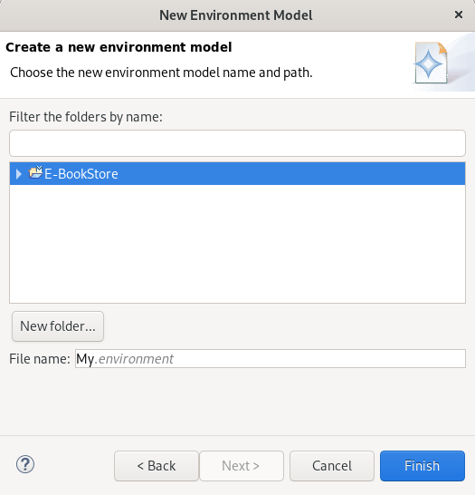

Copyright © 2008, 2023 Obeo - All rights reserved. This program and the accompanying materials are made available under the terms of the Eclipse Public License v1.0
Les modèles environnements sont principalement utilisés pour définir des librairies de types dans le but de rendre ces types disponibles dans les modèles Safr@n.
Avant la version Safr@n 1.9 le modèle «obeo.environment» était ajouté par défaut dans les dépendances des projets modeling. Depuis la version Safr@n 1.9 il est possible de choisir les ressources environnements ajoutées lors de la création d’un projet modeling, ainsi que de gérer les ressources environnement d’un projet.
A la création d’un projet modeling la ressource «obeo.environment» est ajoutée par defaut.
Ce comportement repose sur l’utilisation du point d’extension «org.obeonetwork.dsl.environment.providedEnvironmentModel» qui permet de définir les modèles environnement utilisables dans le studio.
Ce point d’extenion permet de contribuer des modèles environement en définissant pour chacun d’eux :
A la création d’un projet modeling, seuls les modèles environnement dont la priorité est la plus élevée sont chargés. La ressource «obeo.environment» est contribuée à ce point d’extension avec la priorité 0. (Ainsi, si un autre modèle environement est contribué avec la priorité 0, ces deux modèles seront chargés par défaut à la création d’un projet modeling).
La boîte de dialogue «Manage Environment» permet de gérer les ressources environnement pour un projet de modélisation donné. Elle est mise à disposition par l’action «Manage environment resources» du menu contextuel d’un projet modeling, d’une ressource aird, ou de l'élément «Project Dependencies» :

La boîte de dialogue est composée d’un tableau listant toutes les ressources environnements accessibles pour le projet modeling concerné.
Les ressources environnment se trouvant dans le projet sont automatiquement actives et ne peuvent pas être désactivées. Elles sont présentées en gris.
Les ressources environnement apportées par point d’extension sont désactivables en décochant la case à cocher en début de ligne. Elles sont présentées en noir.

Le résultat de la sélection est appliqué lors de la validation de la boîte de dialogue.
Dans le cas du décochage d’une ressource, une vérification est faite pour s’assurer que les éléments contenus dans la ressource ne sont pas utilisés dans le projet modeling. Si certains éléments d’une ressource retirée du projet sont utilisés, un dialogue d’avertissement s’affiche demandant confirmation à l’utilisateur :

Ce dialogue présente sous forme d’arbre les objets qui référencent des éléments de la ressource environnement sur le point d'être retirée des dépendances du projet (ici obeo.environment). Si ce dialogue est validé, les références listées sont supprimées. Si le message d’avertissement est annulé la ressource environnement n’est pas retirée des dépendances du projet.
Il est possible que plusieurs messages d’avertissements se succèdent dans le cas où plusieurs ressources environnement sont retirées des dépendances du projet.
Remarques :
- Les changements sont appliqués mais pas sauvegardés
- Il est possible d’annuler tous les changements opérés à l’aide du raccourci clavier "Ctrl+Z.
Un assistant de création de modèles Environment est accessible via le menu :
File > New > Other ... > Environment Model (Catégorie IS Designer)

Cet assistant permet de définir

Une fois l’assistant validé, le modèle est créé.